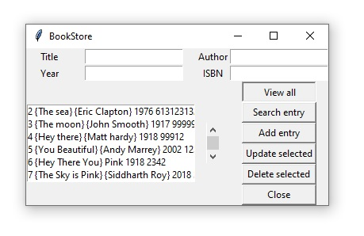

Book Store
This was a project I started back in august 2019 when I first learned python. I created this project to test
my python skills.
Book Store is a simple python program which is uses a simple GUI to search and retrieve the data of Books.
The program is optimized and have minimal time and space complexities. It can add, delete, search, view and
update the data of books.
Since it uses a simple GUI so it is user friendly and can be used by anyone. The program can be installed
and run on any computer.
It took a hard work to built this project as it is the first python project for me.
Technologies:
- - Python
- - Tkinter
- - SQL lite
Admin Dashboard
Sample I

Sample II
Sample III